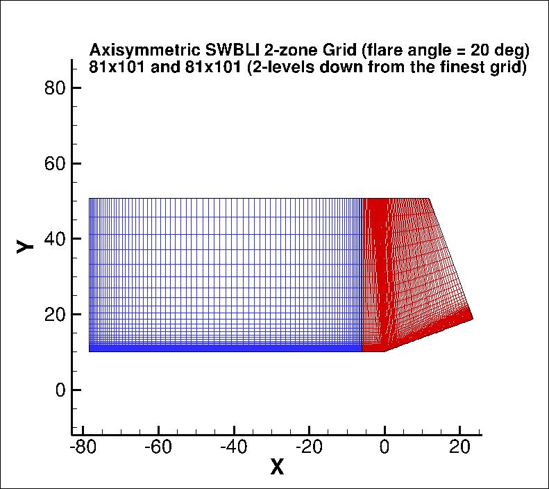

|
Langley Research CenterTurbulence Modeling Resource |
Return to: Axisymmetric Shock Wave Boundary Layer Interaction near M=7 Case Intro Page
Return to: Turbulence Modeling Resource Home Page
Grids - Axisymmetric Shock Wave Boundary Layer Interaction near M=7 Case
A series of 5 nested grids, in units of cm,
are provided. All grid files have been gzipped.
Each coarser grid is exactly every-other-point
of the next finer grid, ranging from the finest 2-zone 321 x 401 and 321 x 401
to the coarsest 2-zone 21 x 26 and 21 x 26 grid.
The following figure shows a portion of
the 81 x 101 and 81 x 101 grid (2 levels down from the finest grid).
Also note that for the experimental data, the wall-normal coordinate y' is defined such that y'=0 on the cylinder surface.
However, in the CFD grid, y=0 represents the cylinder's axis of rotation, and the cylinder surface is at approximately y=10.15 cm).
The simple transformation is given by: y' = y - 10.15.

Note: be sure to use double precision when reading the grids!
STRUCTURED VERSIONS OF
GRIDS
PLOT3D Files
The structured PLOT3D grids are given in two different ways, as 2-D grids (x-y plane) or as 3-D
axisymmetric grids (two planes rotated through 1 deg from each other; one plane rotated +0.5 deg
from the x-z plane, and the other plane rotated -0.5 deg from the x-z plane).
You may use whichever is more convenient for your particular
application. If you get the 2-D grid version, then you must create an axisymmetric grid from
it on your own.
Format for the structured 2D grids is PLOT3D-type, formatted, MG, 2D (nbl=1) - note that you
must use double precision when reading! :
read(2,*) nbl
read(2,*) (idim(n),jdim(n),n=1,nbl)
do n=1,nbl
read(2,*) ((x(i,j,n),i=1,idim(n)),j=1,jdim(n)),
+ ((y(i,j,n),i=1,idim(n)),j=1,jdim(n))
enddo
Download the 2-D version of the grids in PLOT3D format here:
Format for the 2-rotated-plane structured 3D grid is PLOT3D-type, formatted, MG, 3D (nbl=1, and idim in this case is 2) - note that you must use double precision when reading! :
read(2,*) nbl
read(2,*) (idim(n),jdim(n),kdim(n),n=1,nbl)
do n=1,nbl
read(2,*) (((x(i,j,k,n),i=1,idim(n)),j=1,jdim(n)),k=1,kdim(n)),
+ (((y(i,j,k,n),i=1,idim(n)),j=1,jdim(n)),k=1,kdim(n)),
+ (((z(i,j,k,n),i=1,idim(n)),j=1,jdim(n)),k=1,kdim(n))
enddo
Download the 3-D version of the grids in PLOT3D format here:
If desired, example Neutral Map Files associated with 3-D version of the grids are given here (these files specify grid indices associated with each boundary condition - see The Neutral Map File):
Return to: Axisymmetric Shock Wave Boundary Layer Interaction near M=7 Case Intro Page
Return to: Turbulence Modeling Resource Home Page
Recent significant updates:
04/29/2022 - radius stated as 10.15 cm (more digits than the original 10 cm)
Responsible NASA Official:
Ethan Vogel
Page Curator:
Clark Pederson
Last Updated: 04/29/2022